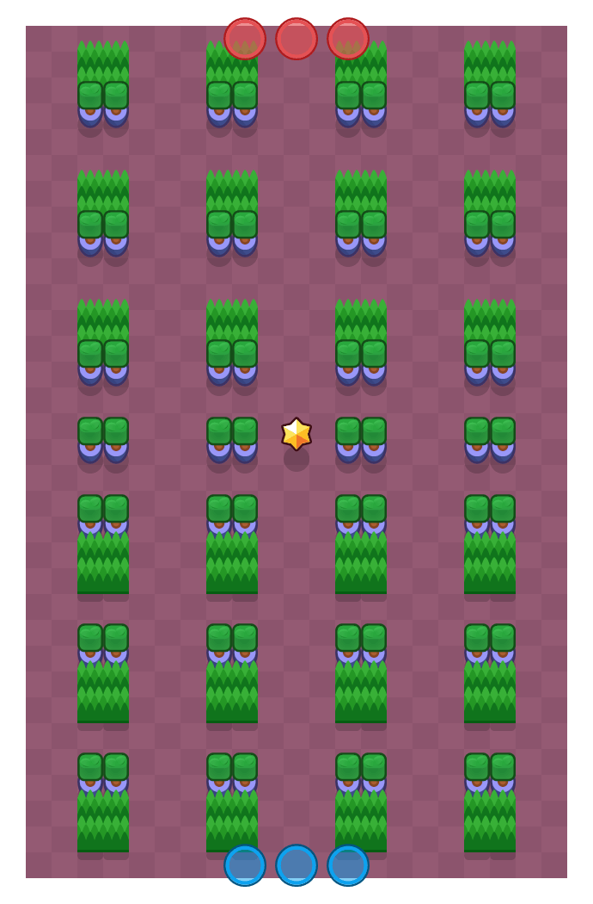

탁월한 선택(Excel)

게임 모드
현재 상태
삭제
제작자
슈퍼셀
존재 기간
2019년 1월 29일 ~ 2019년 6월 29일
마지막 경쟁전 등장
2019년 6월 22일
이름 그대로 셀의 형태를 띄고 있는 맵. 수많은 1칸짜리 벽으로 인해 컨트롤하기 힘들고 게임 자체가 단조로웠던 맵이다. 다이너마이크나 발리가 역시 판을 쳤고 모티스 등의 픽도 많았으며, 파이퍼 들면 궁 한번 못채우고 끝나기 일쑤였던 맵.